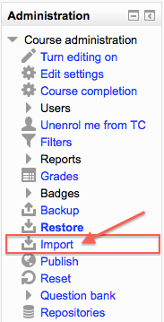
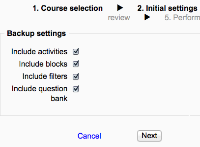
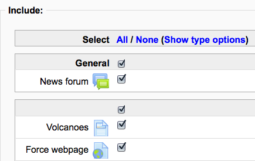
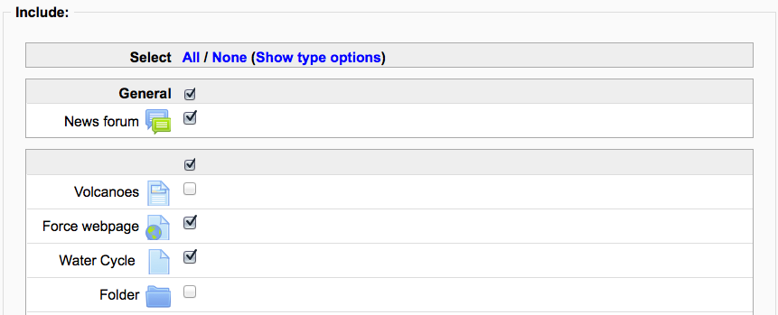

Course activities and resources may be imported from any other course that the teacher has editing permissions in. This will allow teachers to re-use instead of re-creating one or more activities or resources.
Import course data is similar to a backup and restore process and does not include any user data.

- In Administration > Course Administration, click on the Import link.

- Select the course you wish to import from and click Continue.
- You will be presented with the “backup settings” page. Use the check boxes for import activities, blocks and or filters as types of items which will show on the next screen.

- Select the elements you want to include in the import in the Schema settings step.

- Review and click Perform import or click the cancel or previous buttons. The confirmation page will place green check marks and red marks next to the backup settings and include item list for you to review.
- You should see the “Import complete. Click continue to return to the course.” message, or an error message indicating that the import process did not take place.
- Importing a quiz from course A to course B, will also add the questions to the question bank so you can use them in new quizzes.
- Groups can also be imported as a batch from a file.
- It may be necessary to check all Activities (Forums, Assignments, etc.) to assure they are now using HTML format. Due to the change in the HTML editor from 1.9 to 2.2, editing of Activities comes up as “Moodle Auto-format” which displays the HTML version of the Description. Once the “Moodle Auto-format” has been changed to “HTML format” the new HTML editor is available by default when editing.
- Backup for import - allows a user to backup a course ready for importing into another course
- Restore from files targeted as import - allows a user to import activities or resources from another course